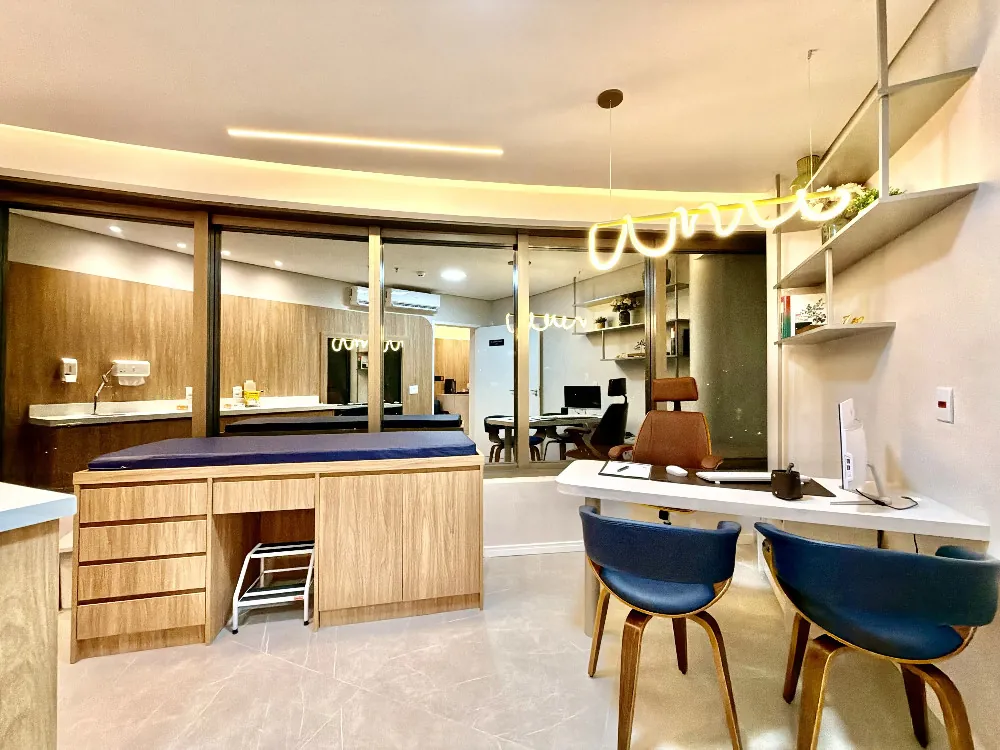
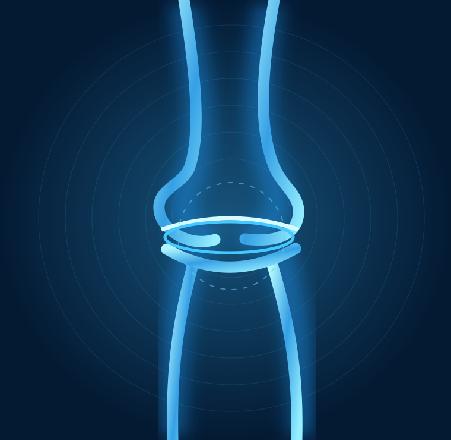
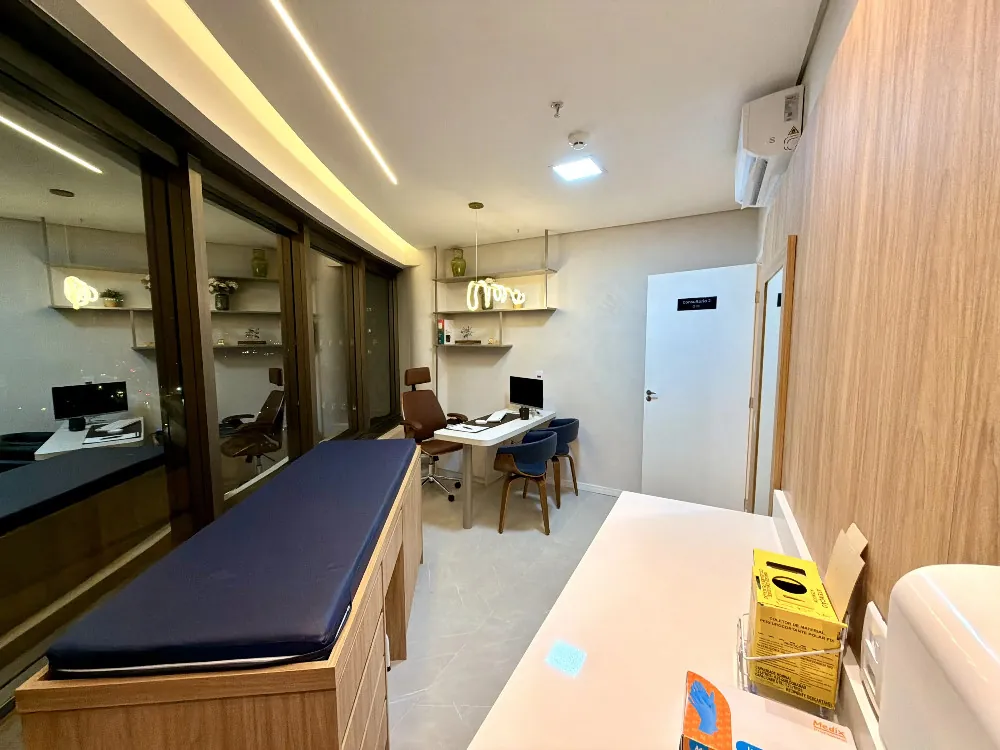
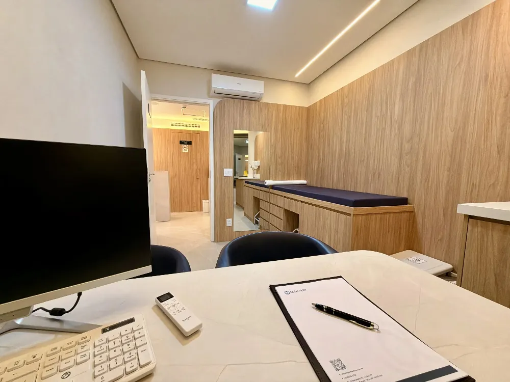

A dor no joelho não precisa decidir os seus planos.
Diagnóstico cuidadoso e tratamentos personalizados para cada etapa do seu movimento.

Não trate só a dor.
Entenda a causa.
O cuidado começa com uma avaliação precisa e decisões construídas com você.
Um espaço pensado para cuidar de você.
Privacidade, conforto e atenção aos detalhes. Conheça a clínica em Alphaville.
Explorar nossa estrutura ↗

Duas trajetórias.
Um compromisso com você.
Experiência clínica, escuta e decisões individualizadas para o cuidado do joelho.
Conhecer nossa equipe ↗

Seu joelho merece atenção em cada etapa.


Voltar a se mover começa com o cuidado certo.
O primeiro passo é entender o que acontece com seu joelho.
Agendar avaliação ↗Suas dúvidas merecem respostas claras.
Informação confiável para você decidir com tranquilidade.
Ler conteúdos do blog ↗Toda dor no joelho precisa de cirurgia?
Não. A indicação depende da causa, do exame clínico, de exames complementares quando necessários e das características de cada paciente.
Como é a primeira consulta?
O médico avalia seus sintomas, histórico, atividades e exames anteriores para definir os próximos passos.
É possível solicitar reembolso do convênio?
A clínica realiza atendimento particular e oferece orientações sobre documentação para solicitar reembolso, sujeito às regras do plano.
O que devo levar à consulta?
Se tiver, leve exames anteriores, lista de medicamentos em uso e informações sobre a evolução dos sintomas.
Seu movimento merece atenção.
Converse com nossa equipe e conheça o cuidado da Ortho Alpha.